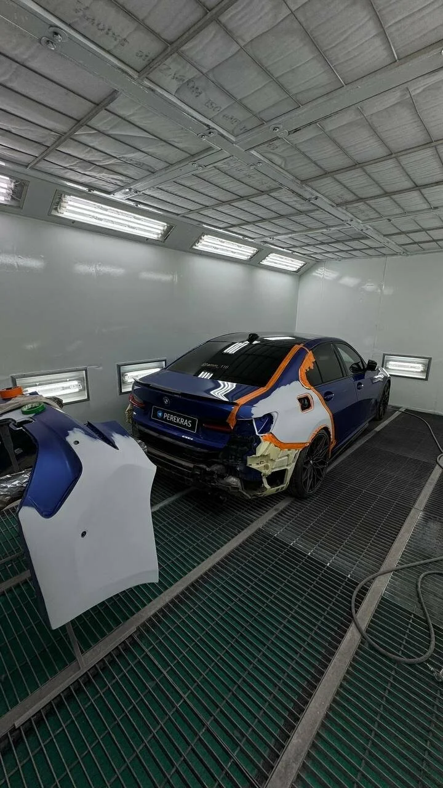

Иллюстрация — пример повреждения кузова, не работа Perekras.
Покраска автомобиля и кузовной ремонт
Perekras — мастерская в Салмачах для обращения по вопросам кузовного ремонта и покраски автомобиля. Расскажите, какая деталь повреждена и что произошло с покрытием: это поможет начать обсуждение необходимых работ. Условия оценки, порядок ремонта и время визита уточняйте по телефону.
Обсудите восстановление лакокрасочного покрытия на повреждённом участке. Важно назвать деталь, показать состояние краски и уточнить ожидаемый результат. Площадь окрашивания, объём подготовки и необходимость работы с соседними элементами определяются после оценки, а не по одному названию дефекта.
02
Кузовной ремонт
Обратиться можно с вопросом о повреждении кузова и дальнейшей покраске. Опишите расположение вмятины, нарушение формы или зазоров, если они заметны. Возможность ремонта, состав операций и наличие скрытых повреждений уточняйте индивидуально; фотографии помогают объяснить задачу, но не заменяют осмотр.

Иллюстрация — оттенок и покрытие кузовной детали, не работа Perekras.
PEREKRAS · КАЗАНЬ
От описания повреждения к понятной задаче
Царапина, скол или вмятина могут выглядеть небольшими, но объём работ зависит от состояния детали под покрытием. При разговоре разделите желаемый результат и то, что видно сейчас: где находится дефект, насколько он заметен и был ли этот участок отремонтирован раньше. Не пытайтесь самостоятельно шлифовать повреждение перед оценкой. Возможность восстановления конкретной детали и необходимость покраски нужно обсудить с мастерской.
С чем обратиться
Начните с того, что заметили на автомобиле. Ниже — ориентиры для разговора, а не готовый диагноз. Если повреждение затрагивает безопасность движения, отдельно уточните возможность доставки автомобиля вместо поездки своим ходом.
Царапины и сколы: назовите деталь и сообщите, виден ли под краской другой слой или металл.
Вмятина после контакта: опишите место удара и приложите общий вид повреждённой стороны.
Изменение формы детали: обратите внимание на зазоры и то, как открываются дверь или крышка багажника.
Следы прежнего ремонта: расскажите, окрашивалась ли деталь и появились ли трещины, отслоения или коррозия.
Что влияет на стоимость
При кузовном ремонте обычно учитывают размер и глубину повреждения, доступ к его обратной стороне, необходимость снятия деталей и состояние металла. Для покраски имеют значение площадь обработки, состояние прежнего покрытия и объём подготовки поверхности.
Уточните, что входит в предложенную оценку: материалы, демонтаж, подготовка и окрашивание. Отдельно обсудите порядок согласования дополнительных работ, если после разборки обнаружатся скрытые дефекты. Это общие факторы оценки; цены и сроки конкретного ремонта сообщает мастерская.
Что подготовить перед звонком
Запишите марку, модель и год автомобиля. Сделайте общий снимок повреждённой стороны, кадр детали целиком и несколько фотографий дефекта с разных углов при дневном свете. Сохраните сведения о предыдущей покраске, если они известны.
Заранее решите, какой вопрос важнее: возможность восстановления детали, внешний вид покрытия или состав работ. Спросите, нужна ли предварительная запись на осмотр и можно ли начать обсуждение по фотографиям. Время визита и актуальный режим работы согласуйте до поездки в Салмачи.
Как обратиться в мастерскую
01
Опишите задачу
Позвоните или воспользуйтесь опубликованной ссылкой Telegram. Назовите автомобиль, повреждённую деталь и видимый дефект.
02
Уточните оценку
Обсудите необходимость осмотра, предварительный состав работ и какие сведения понадобятся для расчёта стоимости.
03
Согласуйте визит
Уточните удобное время, порядок приёма автомобиля и проезд по адресу: Юбилейная улица, 26.